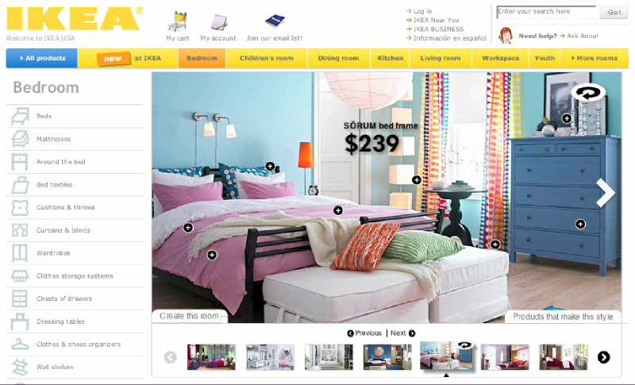
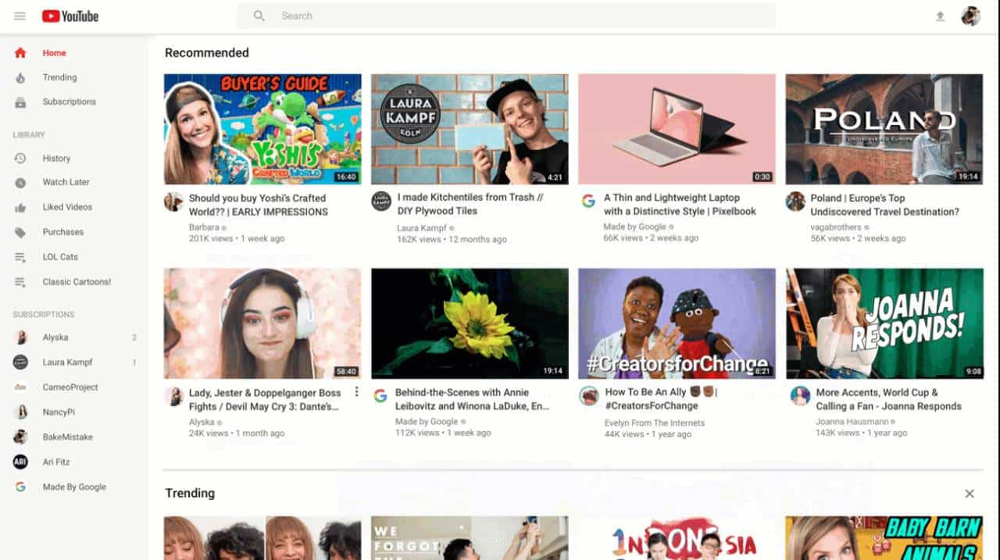

Olá, sou o Paulie!
Moro nos Estados Unidos da América e
Sou formado há 3 anos na área de engenharia de software na universidade rival UMC e formado no curso online da Microsoft sobre Data Center.
Confira aqui alguns de meus projetos mais relevantes:
 |
 |
 |
 |
 |
 |  |
 |
Minha biografia:
Desde criança, sempre tive uma curiosidade enorme sobre o mundo ao meu redor. Cresci nos Estados Unidos, sonhando em um dia poder criar algo que unisse minha paixão por contar histórias e minha fascinação por tecnologia. Quando era pequeno, passava horas assistindo filmes e séries, imaginando como aquilo tudo era feito e ao mesmo tempo, adorava desmontar meus brinquedos eletrônicos para entender como funcionavam.
Foi essa mistura de sonhos que me levou a buscar um caminho único. Embora eu tenha começado minha carreira como ator, sempre senti que precisava investir nos estudos para entender melhor o lado técnico das coisas. Há três anos, me formei em Engenharia de Software pela Universidade rival UMC. Durante a faculdade, me apaixonei por disciplinas que envolviam arquitetura de sistemas, desenvolvimento de software e segurança da informação. Lembro que, durante um dos meus projetos finais, trabalhei em uma solução para otimizar a gestão de dados em ambientes corporativos, uma experiência que me mostrou como a tecnologia pode impactar positivamente diversas áreas.
Ao longo da minha trajetória, tive a oportunidade de ajudar no desenvolvimento de vários sites, o que me permitiu colocar em prática os conhecimentos adquiridos e entender a importância de uma boa experiência digital para os usuários. Essa vivência me fez enxergar a tecnologia não apenas como ferramenta, mas como uma forma de conectar pessoas e ideias.
Além da graduação, busquei constantemente aprimorar minhas habilidades. Por isso, me inscrevi e concluí o curso online da Microsoft sobre Data Center, que ampliou minha visão sobre infraestrutura e operações de grandes ambientes tecnológicos. Atualmente, me encontro trabalhando no Data Center do Google, um ambiente onde a inovação e a tecnologia de ponta estão presentes todos os dias, e onde posso continuar aprendendo e contribuindo para projetos que impactam milhões de pessoas ao redor do mundo.
Hoje, sigo perseguindo meus sonhos com o mesmo entusiasmo de criança, acreditando que a paixão e a dedicação são os motores para qualquer conquista. Espero poder inspirar outros a nunca desistirem de seus sonhos, por mais diferentes que eles possam parecer.